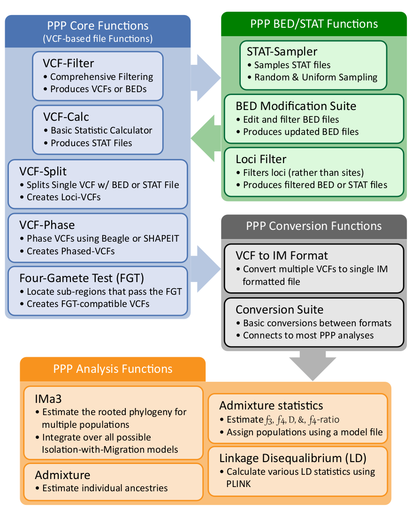

Introduction¶
The Popgen Pipeline Platform (PPP) was written using the Python programming language and designed to operate using Python 3.7. In comparison to a fixed pipeline, the PPP was designed as a collection of modular functions that may combined to generate a wide variety of analyses and pipelines.
For simplicity, PPP functions are separated into four categories: # Core functions: Frequently used methods and procedures in population genomic pipelines (e.g. phasing, filtering, four-gamete test, etc.). # Input file generators: Input generators for creating the necessary input for population genomic analysis (e.g. generating input for IMa3, TreeMix, G-PhoCS, etc.) # Analyses: Common population genomic analyses (e.g. isolation and migration, admixture, linkage disequilibrium, etc.) # Utilities: Simple file-specific procedures often required in population genomic pipelines
For details on specific functions, please see the documentation on each section.
{kind=link}
Figure 1: Structure of the PPP
Creating Pipelines¶
Most PPP-based pipelines are expected to primarily consist of core functions. To simplify development, all core functions were designed to operate using VCF-based files. The VCF format was selected due to the frequent support for the format among publicly available datasets and population genomics software. At present, pipelines may be generated in one of two methods: i) calling each function by command-line or ii) calling the function within a script, such as a jupyter notebook. Example usage of both methods may be found within examples.